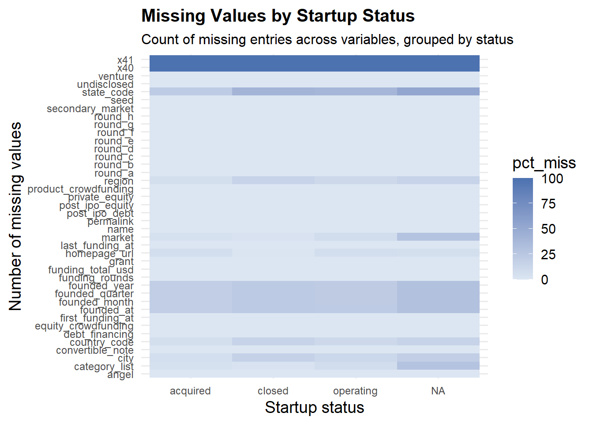
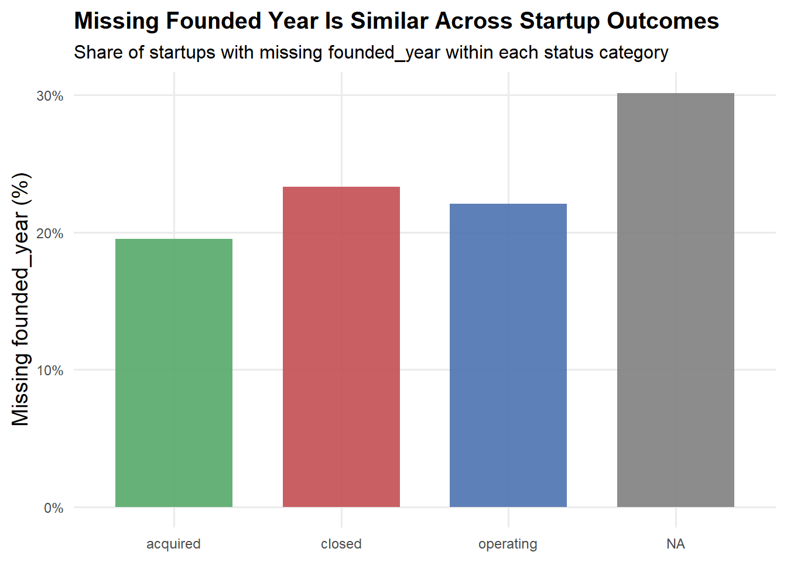
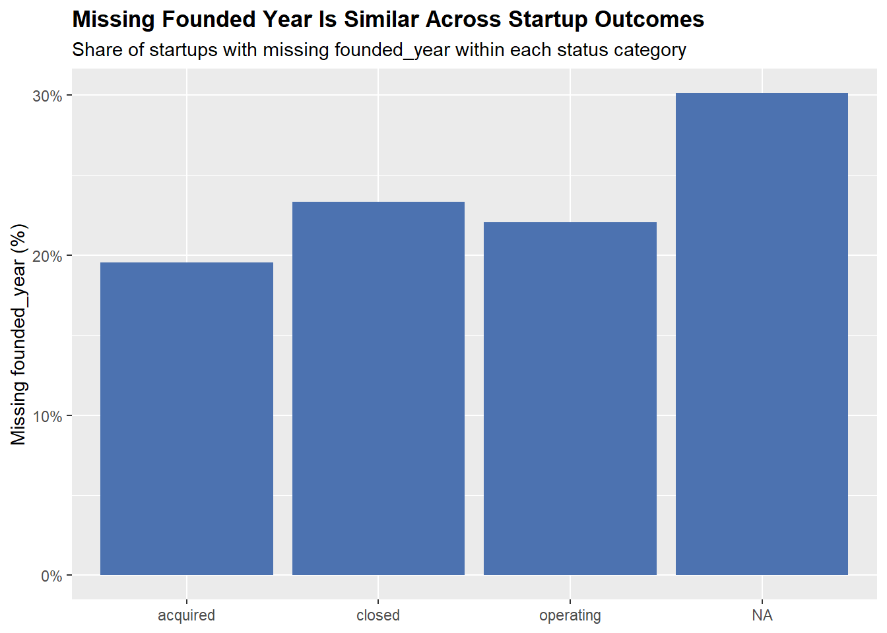

Code
# install.packages("naniar")# install.packages("naniar")library(tidyverse)
library(janitor)
library(naniar) # for missingness plots (optional but very handy)
startup_raw <- read_csv(
"investments_VC.csv",
locale = locale(encoding = "ISO-8859-1") # matches Crunchbase examples
)
startup <- startup_raw |>
clean_names() |> # makes names snake_case, trims spaces
select(-starts_with("unnamed_")) |> # drop completely empty columns
distinct() # remove exact duplicates if any
glimpse(startup)Rows: 49,438
Columns: 41
$ permalink <chr> "/organization/waywire", "/organization/tv-commun…
$ name <chr> "#waywire", "&TV Communications", "'Rock' Your Pa…
$ homepage_url <chr> "http://www.waywire.com", "http://enjoyandtv.com"…
$ category_list <chr> "|Entertainment|Politics|Social Media|News|", "|G…
$ market <chr> "News", "Games", "Publishing", "Electronics", "To…
$ funding_total_usd <dbl> 1750000, 4000000, 40000, 1500000, 60000, 7000000,…
$ status <chr> "acquired", "operating", "operating", "operating"…
$ country_code <chr> "USA", "USA", "EST", "GBR", "USA", "USA", "ARG", …
$ state_code <chr> "NY", "CA", NA, NA, "TX", "FL", NA, NA, "IL", NA,…
$ region <chr> "New York City", "Los Angeles", "Tallinn", "Londo…
$ city <chr> "New York", "Los Angeles", "Tallinn", "London", "…
$ funding_rounds <dbl> 1, 2, 1, 1, 2, 1, 1, 1, 1, 1, 1, 1, 1, 1, 1, 2, 4…
$ founded_at <chr> "6/1/12", NA, "10/26/12", "4/1/11", "1/1/14", "10…
$ founded_month <chr> "2012-06", NA, "2012-10", "2011-04", "2014-01", "…
$ founded_quarter <chr> "2012-Q2", NA, "2012-Q4", "2011-Q2", "2014-Q1", "…
$ founded_year <dbl> 2012, NA, 2012, 2011, 2014, 2011, NA, 2007, 2010,…
$ first_funding_at <chr> "6/30/12", "6/4/10", "8/9/12", "4/1/11", "8/17/14…
$ last_funding_at <chr> "6/30/12", "9/23/10", "8/9/12", "4/1/11", "9/26/1…
$ seed <dbl> 1750000, 0, 40000, 1500000, 0, 0, 0, 0, 0, 41250,…
$ venture <dbl> 0, 4000000, 0, 0, 0, 7000000, 0, 2000000, 0, 0, 0…
$ equity_crowdfunding <dbl> 0, 0, 0, 0, 60000, 0, 0, 0, 0, 0, 0, 0, 0, 0, 0, …
$ undisclosed <dbl> 0, 0, 0, 0, 0, 0, 4912393, 0, 0, 0, 0, 0, 0, 0, 0…
$ convertible_note <dbl> 0, 0, 0, 0, 0, 0, 0, 0, 0, 0, 0, 0, 0, 1750000, 0…
$ debt_financing <dbl> 0, 0, 0, 0, 0, 0, 0, 0, 0, 0, 0, 0, 0, 0, 0, 0, 2…
$ angel <dbl> 0, 0, 0, 0, 0, 0, 0, 0, 0, 0, 0, 0, 0, 0, 0, 0, 0…
$ grant <dbl> 0, 0, 0, 0, 0, 0, 0, 0, 0, 0, 0, 0, 0, 0, 0, 0, 0…
$ private_equity <dbl> 0, 0, 0, 0, 0, 0, 0, 0, 0, 0, 0, 0, 0, 0, 0, 0, 0…
$ post_ipo_equity <dbl> 0, 0, 0, 0, 0, 0, 0, 0, 0, 0, 0, 0, 0, 0, 0, 0, 0…
$ post_ipo_debt <dbl> 0, 0, 0, 0, 0, 0, 0, 0, 0, 0, 0, 0, 0, 0, 0, 0, 0…
$ secondary_market <dbl> 0, 0, 0, 0, 0, 0, 0, 0, 0, 0, 0, 0, 0, 0, 0, 0, 0…
$ product_crowdfunding <dbl> 0, 0, 0, 0, 0, 0, 0, 0, 0, 0, 0, 0, 0, 0, 0, 0, 0…
$ round_a <dbl> 0, 0, 0, 0, 0, 0, 0, 2000000, 0, 0, 0, 0, 0, 0, 0…
$ round_b <dbl> 0e+00, 0e+00, 0e+00, 0e+00, 0e+00, 7e+06, 0e+00, …
$ round_c <dbl> 0, 0, 0, 0, 0, 0, 0, 0, 0, 0, 0, 0, 0, 0, 0, 0, 0…
$ round_d <dbl> 0, 0, 0, 0, 0, 0, 0, 0, 0, 0, 0, 0, 0, 0, 0, 0, 0…
$ round_e <dbl> 0, 0, 0, 0, 0, 0, 0, 0, 0, 0, 0, 0, 0, 0, 0, 0, 0…
$ round_f <dbl> 0, 0, 0, 0, 0, 0, 0, 0, 0, 0, 0, 0, 0, 0, 0, 0, 0…
$ round_g <dbl> 0, 0, 0, 0, 0, 0, 0, 0, 0, 0, 0, 0, 0, 0, 0, 0, 0…
$ round_h <dbl> 0, 0, 0, 0, 0, 0, 0, 0, 0, 0, 0, 0, 0, 0, 0, 0, 0…
$ x40 <lgl> NA, NA, NA, NA, NA, NA, NA, NA, NA, NA, NA, NA, N…
$ x41 <lgl> NA, NA, NA, NA, NA, NA, NA, NA, NA, NA, NA, NA, N…miss_summary <- startup |>
summarise(across(everything(), ~ mean(is.na(.)))) |>
pivot_longer(everything(),
names_to = "variable",
values_to = "prop_missing") |>
filter(prop_missing > 0) |> # drop variables with no missing (optional)
arrange(desc(prop_missing))
gg_miss_vars <- ggplot(miss_summary,
aes(x = reorder(variable, prop_missing),
y = prop_missing)) +
geom_col(fill = "#4C72B0") +
coord_flip() +
scale_y_continuous(labels = scales::percent) +
labs(
title = "Some Variables Have Substantial Missing Data",
subtitle = "Share of observations with missing values by variable",
x = NULL,
y = "Missing values (%)"
) +
theme(
plot.title = element_text(face = "bold")
)
gg_miss_vars
Commentary you can write:
Two columns in the raw file are entirely missing and are dropped.
Location and founding information have substantial missingness (e.g., state_code, city, founded_year, founded_month, founded_quarter).
Core variables for our analysis – status, funding_total_usd, and name – are mostly observed, with only a small fraction of missing status (~2–3% of rows).
gg_miss_fct(startup, fct = status) +
labs(
title = "Missingness by Startup Status",
x = "Status",
y = "Number of missing cells"
)
founded_missing_by_status <- startup |>
group_by(status) |>
summarise(
prop_missing_founded_year = mean(is.na(founded_year)),
n = n(),
.groups = "drop"
)
gg_miss_status <- ggplot(founded_missing_by_status,
aes(x = status,
y = prop_missing_founded_year)) +
geom_col(fill = "#4C72B0") +
scale_y_continuous(labels = scales::percent) +
labs(
title = "Missing Founded Year Is Similar Across Startup Outcomes",
subtitle = "Share of startups with missing founded_year within each status category",
x = NULL,
y = "Missing founded_year (%)"
) +
theme(
plot.title = element_text(face = "bold")
)
gg_miss_status
Commentary you can write:
Missingness in founding dates is fairly similar across operating, acquired, and closed startups, suggesting we do not have an obvious pattern where, for example, failed startups systematically omit founding information.
The status variable itself has a small proportion of missing values; these “unknown” cases could either be dropped in sensitivity analyses or treated as a separate category depending on the question.